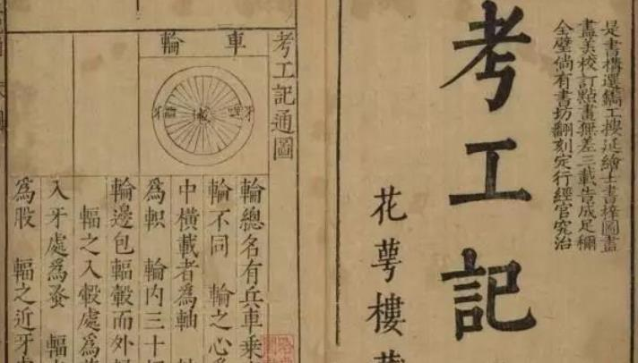
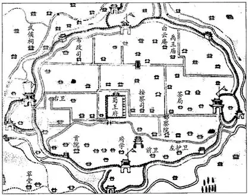
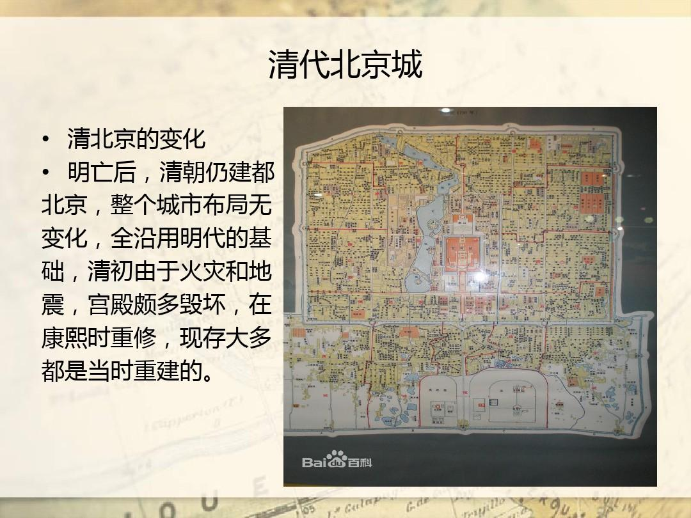
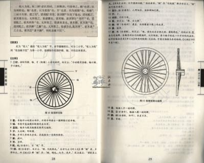

战国时期成书，是中国目前所见最早、最完整的手工业技术典籍，也是《周礼》的重要篇章。它系统记载了先秦六大手工行业、三十项工艺规范，首次确立了“天有时、地有气、材有美、工有巧”的东方造物哲学，奠定了中国数千年工艺与建筑的思想根基，被誉为“中国科技与工艺的开山经典”。

六大维度展现中国最早工程技术典籍的历史地位
《考工记》之所以成为文明里程碑，在于它首次将手工技艺上升为系统科学与哲学体系
核心概念：记载中国最早的都城规划制度：“匠人营国，方九里，旁三门。国中九经九纬，经涂九轨。左祖右社，面朝后市”。
何以伟大：确立了中国古代都城对称、方正、等级分明的规划体系，直接影响汉长安城、唐长安城、元大都、明清北京城的营造格局，是东方都城规划的思想源头。
核心概念：“天有时、地有气、材有美、工有巧，合此四者，然后可以为良”，是世界最早的系统造物理论。
何以伟大：将自然规律、材料特性、工匠技艺、审美追求完美统一，成为中国数千年工艺、建筑、器物制造的最高准则，远超同时代世界技术水平。
核心概念：详细规范车轮、弓箭、礼器、兵器、皮革、染色、建筑、水利等30种工艺的尺寸、比例、工序、验收标准。
何以伟大：建立了中国最早的手工业标准化体系，让分散的工匠有统一规范可循，标志着先秦手工业从经验走向科学，是后世《营造法式》等官书的直接源头。
核心概念：所有工艺不仅追求坚固实用，更严格对应等级礼制，器物尺寸、纹饰、用途均与身份、场合、礼仪绑定。
何以伟大：将技术、审美、政治礼制融为一体，让建筑与器物成为中华文明秩序的载体，塑造了中国独有的“器以载道”文化传统，影响中华文明数千年。
一部先秦典籍，如何塑造三千年中华文明的技术与审美？
战国齐地成书，系统总结先秦官营手工业技术，成为诸侯国工艺规范蓝本。
补入《周礼》成为官方经典，确立“匠人营国”都城制度，成为国家营造最高依据。
成为《营造法式》等建筑典籍的思想源头，造物哲学与营造制度一脉相承。
都城规划、礼制建筑、官式工艺仍以《考工记》为最高准则，文脉从未中断。
成为中国科技史、建筑史、工艺史研究的起点，被世界公认为古代工程奇迹。
成为文化遗产保护、传统工艺复兴、中式美学研究的精神源头与理论基石。



《考工记》的伟大，在于它是中华文明技术与思想的第一块基石。它以“匠人营国”定都城格局，以“天时地气材美工巧”立造物哲学，将工艺、礼制、审美熔于一炉，成为中国三千年营造文化的精神源头。它是一把尺，度量出先秦文明的理性高度；它是一座桥，连接起东方技艺与哲学的永恒对话。